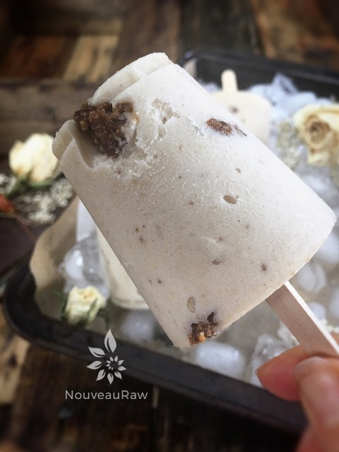
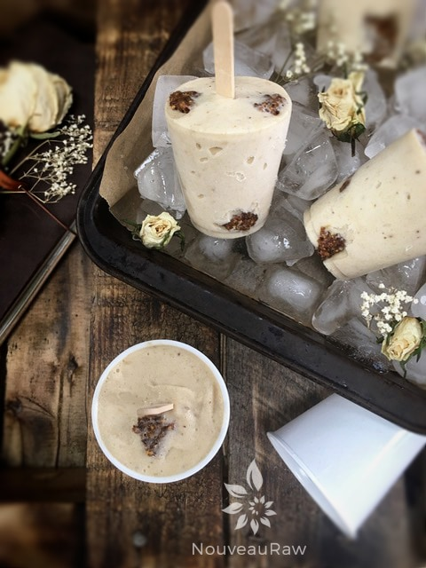

Banana Ice Cream with Fig Chunks
– raw, vegan, gluten-free –
Frozen bananas whipped into ice cream has been a rage for some time now. It’s nothing new, but it will always be a magical experience. To see bananas transform into such a smooth and creamy “ice cream” is nothing short of amazing.
If this is a new concept for you, be prepared for a new addiction. The only criteria are that you do have to enjoy bananas because it will taste like bananas. You’d be surprised as to how many times I get asked that.
I find that when people try to incorporate more raw foods or even healthier foods into their diets, they are always looking for “fast foods”…. staples that they can have on hand. Well, frozen bananas are one of those foods that you should always have on hand.
Freckled Bananas
Start off with really ripe bananas. Make sure they are well freckled with brown spots, be careful not to confuse them with bruises. Next, peel them and lay them whole on a cookie sheet. You can slice them at this point for measurement sake, I like to have them whole so that I can say…” add one large banana,” etc. This is up to you. Place the cookie sheet in the freezer. Once hardened, transfer into an airtight, freezer container and pop back in the freezer.
Now you will always have bananas on hand for; banana ice cream, to throw into smoothies, or to incorporate into many raw desserts. For banana ice cream, I find using a food processor is much easier rather than a blender, but use what you have and what you are most comfortable with.
Once whipped up, you can eat it as soft-serve ice cream, or you can freeze it to a more solid-state. Just make sure that you use a freezer-proof container, so it doesn’t get freezer burnt. If you have followed my recipes enough, you know that I am a mason jar lover. Freezing ice cream in these is perfect, just make sure that is labeled for freezing. I also love using plastic Dixie cups. They offer portion control of 3 oz, which may not sound like much but it’s perfect! I hope you enjoy this simple and delicious recipe. Blessings, amie sue
yields 8 (3 oz Dixie cups)
Ice cream:
- 4 cups sliced bananas, frozen
Fig Filling:
- 1 cups dried figs firmly packed
- 2 Tbsp water
Preparation:
Fig Chunks: (make first)
- Place figs in a bowl and cover with hot water. Allow them to soak for 15+ minutes to soften.
- Drain the soak water from the figs and place in the food processor, again fitted with the “S” blade. Add water and process till it becomes a thick paste.
- Roll into small balls and freeze for 15-30 minutes.
Ice cream:
- Place the frozen banana slices in the food processor, fitted with the “S” blade, and process until it is creamy and white in color.
- Add the fig balls and hand mix gently.
- Enjoy in the “soft serve” state or place in a freezer-proof container and freeze. When ready to eat, allow it to thaw for about 15 minutes before serving.
Freezing Suggestions for Ice Cream:
- Use an ice cream machine. Follow the manufactures directions.
- Freeze in popsicle molds or 3 oz Dixie cups with a popsicle stick inserted.
-
- Store the ice cream in the very back of the freezer, as far away from the door as possible. Every time you open your freezer door you let in warm air. Keeping ice cream way in the back and storing it beneath other frozen-sold items will help protect it from those steamy incursions.
- Ice cream is full of fat, and even when frozen, fat has a way of soaking up flavors from the air around it—including those in your freezer. To keep your ice cream from taking on the odors, use a container with a tight-fitting lid. For extra security, place a layer of plastic wrap between your ice cream and the lid.
- To soften in the refrigerator, transfer ice cream from the freezer to the refrigerator 20-30 minutes before using. Or let it stand at room temperature for 10-15 minutes.
- Wish to make your own raw ice cream, wonder what machine I might recommend, and more? Click (here) to check out the Reference Library!


© AmieSue.com